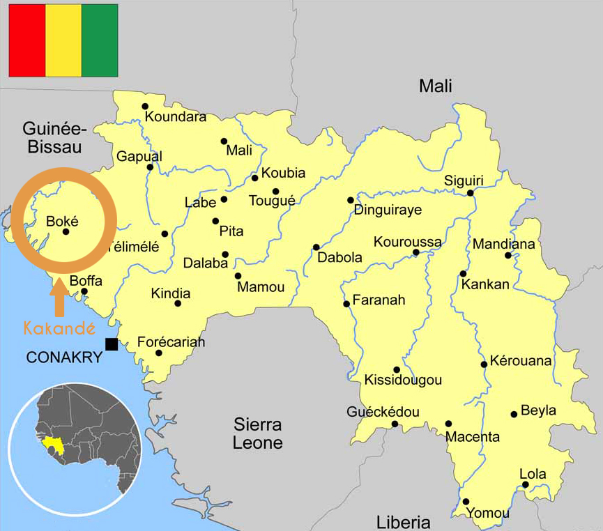

Genèse du Projet
Les membres fondateurs de l’association se sont réunis lors d’une première réunion générale en septembre 2016. Nous avions
débattu des projets que nous pouvions mettre en place. Comment contribuer au développement de ces populations à notre échelle ?
Quelles peuvent être les actions qui impacteront le quotidien des habitants ? Nous sommes partis du constat que nos parents
sont arrivés en France il y a environ 30 ans, dans le but d’aider leurs familles en Guinée, en quittant tous ce qu’ils avaient.
Ils ont pu contribuer au développement de leurs villages, en construisant une école primaire, un marché couvert et en collaborant
à la construction du dispensaire il y a de cela 27 ans. Toutes les infrastructures ont été d’une grande aide pour le village
de Dabankou et ses alentours.
Au fil des années, la population a augmenté et les infrastructures se sont détériorées au fur et à mesure, faute d’entretien.
Durant nos nombreux voyages en Guinée, nous avons pu constater les faits. Ce qui nous à marquer, c’était les nombreux décès
liés aux mauvaises conditions sanitaires. Nous nous rendions compte, que nous avions tous perdu des proches notamment beaucoup
de jeunes enfants, des amis et parents, dû au manque d’infrastructure sanitaire convenable. C’est ainsi que nous nous sommes
focalisé sur la santé, car elle est primordiale. En France, l’accès à un hôpital ou un à un médecin est facilité. On se rend
compte que c’est un luxe et pour d’autre une lutte.
Contexte et Diagnostique
La Guinée

La Guinée, qu’on appelle aussi Guinée-Conakry est un pays de la côte ouest africaine. Parfois qualifiée de « scandale géologique
», elle dispose de richesses hydrographiques immenses (« château d’eau de l’Afrique de l’Ouest ») et d’un potentiel minier
largement sous- exploité. Le pays est compté parmi les plus pauvres du continent africain avec environs 12,5 millions d’habitants.
La population guinéenne est relativement jeune, 41% de la population à moins de 15 ans. En Guinée, le taux de mortalité materno-infantile
reste très élevé 724/100 000 femmes meurent en donnant la vie et 1/8 des enfants meurent avant d’atteindre l’âge de 5 ans.
Les principales causes de mortalité en Guinée sont ; le paludisme, les I.R.A (Infection Respiratoire Aigüe), les diarrhées
et le VIH.
Les nombreux problèmes de santé sont liés aux faibles niveaux d’instruction et revenu des habitants et aux tabous sociaux
culturels. L’environnement et la pollution sont aussi source de maladie, et représentent véritablement un danger pour la
population. Le système de santé en Guinée reste encore défaillant. L’épidémie Ébola en fut révélatrice en 2014.
Kakandé
Kakande est une zone habitée à l’ouest de la région de Boké. Elle regroupe 16 districts (plus précisément un ensemble de villages
qui compte entre 3000 et 9000 habitants). Villages : Bokarea, Dakonta, Diassia, Diakhabia, Dabankou, Fodekontea, Kamikolon,
Kolaboui centre, Lefoureboui, Sarabaya, Sateneya, Sogoboly, Songolo, Taboudea, Tassara, Tassibon
Nous avons recensé trois postes de santé dans cette sous-préfecture : (actuellement)
- Poste de santé de TASSIBON
- Poste de santé de DAKONTA
- Poste de sante de DABANKOU (lieu de la construction du projet)
Dabankou
 Carte du village de Dabankou vue du ciel
Carte du village de Dabankou vue du ciel
Dabankou est un village de Kakandé, d’ethnie diakhanké. Il est situé à 14 km et à 20 minutes environ de Kolaboui en voiture.
Il est à égale distance du centre-ville de Boké ainsi que de Kamsar (33Km), soit 40 minutes en transport entre Dabankou et
ces deux grandes villes. Le village compte environs 7000 habitants.
Les habitants du village manquent de moyens ; ils sont généralement agriculteurs et cultivent arachides, piments, aubergines,
gombo et huile de palme. Les terres sont très fertiles, mais les habitants ont malheureusement du mal à vivre pleinement
de leurs activités. L’utilisation d’outils traditionnels ne permet pas de faire de grands rendements. Le village a connu
dernièrement un départ considérable de jeunes hommes vers l’Europe, laissant derrière eux femmes, enfants et personnes âgées.
Les habitants de cette zone, souffrent du manque d’un établissement de santé délivrant des soins adéquats. Le village possède
actuellement un poste de santé vétuste. Il a été construit il y a 27 ans, sans électricité, ni eau courante, obligeant le
médecin-chef à aller quémander l’eau auprès des habitants à proximité du poste.
Le poste prend en charge des cas généralistes (vaccination, accouchement, …). Aucune opération chirurgicale n’y est effectuée.
Il comprend :
- 1 salle d’accueil
- 1 salle de consultation
- 1 salle des soins et de vaccination
- 1 magasin
- Latrines (2) à l’extérieur
- 2 chambres de repos dont l’une est destinée à l’accouchement.
Le poste de santé ne dispose d’aucune pharmacie, ce qui contraint à stocker les médicaments dans la réception, en pleine
chaleur. Lors de notre voyage sur place, nous avons recueilli les témoignages des habitants se plaignant du manque de médicaments.
Les femmes enceintes sont contraintes d’apporter elles-mêmes leurs eaux et leurs draps pour l’accouchement. Le poste n’étant
pas électrifié, celles qui sont sur le point d’accoucher la nuit, sont référées en ville.
Cette situation contraint les habitants à se déplacer dans les différents postes de santé des autres districts voire des
grandes villes (Boké, Kamsar, Conakry). Tout le monde n’ayant pas les moyens de payer le prix du déplacement et la consultation,
ils sont amenés à se procurer des médicaments vendus dans les stands de marché. La plupart de ces médicaments sont faux et
représentent un véritable danger. Ils sont souvent constitués d’ingrédients douteux (sable, farine de riz, amidon, drogue,
alcool…). L’émergence de ce marché est de plus en plus préoccupant, il entraîne des décès et cause l’augmentation de maladie
chronique comme l’hypertension et le diabète.
La situation est telle, que de ce fait, certains parents résidant en France se voient dans l’obligation d’envoyer des médicaments
à leurs proches malades. On observe également l’apparition de structures sanitaires informelles, la santé étant devenue un
business. La plupart sont tenues par du personnel médical non qualifié ne respectant pas les normes (hygiène, médicale).
En conclusion, les habitants ont besoin d’une structure de santé viable, de pouvoir bénéficier de médicaments adéquats et
de disposer de la présence d’un personnel qualifié au sein du poste de santé.
Le Projet
L’AJK (Association des Jeunes de Kakande) en collaboration avec UCUD (Union de la Communauté Urbaine de Dabankou) a pour
objectif la réalisation d’un poste de santé à Dabankou afin de pallier aux besoins médicaux des habitants. Nous souhaitons
assurer un poste de santé pourvu en équipements nécessaires à une prise en charge correcte et réglementée, accessible pour
tous les habitants de Dabankou et les villages alentours. À travers ce projet, l’association souhaite faire prendre conscience
aux jeunes natifs des villages, qu’ils peuvent agir sur leur quotidien. En prenant part au projet, et en s’intéressant à
leur environnement, ils pourront être à même de réaliser des projets à leur échelle, et de leurs initiatives.
Objectif
- Offrir une structure de santé convenable aux habitants de Kakandé
- Approvisionnement en eau salubre pour la structure
- Servir de Modèle et Promouvoir une architecture bioclimatique
- Créer de l’emploi et former les jeunes à de nouvelles méthodes de construction
Diagnostic du poste de santé de Dabankou
L'actuel bâtiment est dans un état vétuste et présente un risque d'effondrement. Il a été construit en 1990 en parpaing avec
une charpente en bois et une couverture en tôle. Aujourd'hui, on relève plusieurs points de fissures sur les façades et des
infiltrations au niveau de la toiture. La fondation se rétracte de plus en plus à cause de la condensation d'humidité. Cette
dernière provoque des moisissures au niveau du plafond ainsi que dans les murs porteurs. En outre, dans sa forme compacte,
le bâtiment fonctionne comme un condensateur de chaleur. C'est pour toutes ces raisons (structurelle, ancienneté, et climatique)
que nous envisageons de démolir le bâtiment afin d'éviter le risque d'effondrement. Sachant qu'au vue de sa capacité d'accueil,
sa mise en conformité en tant qu'établissement recevant du public coûtera quasiment deux fois plus cher que sa reconstruction.